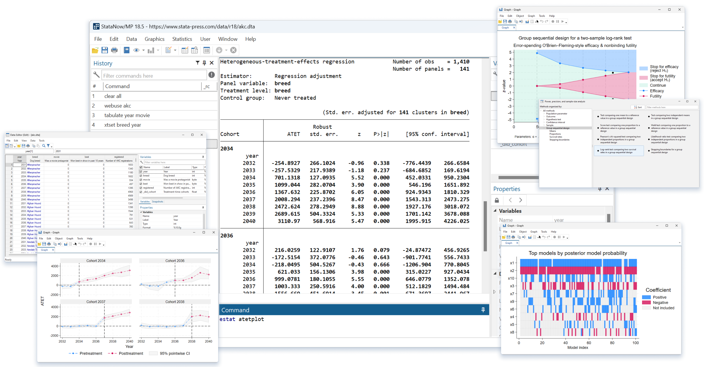
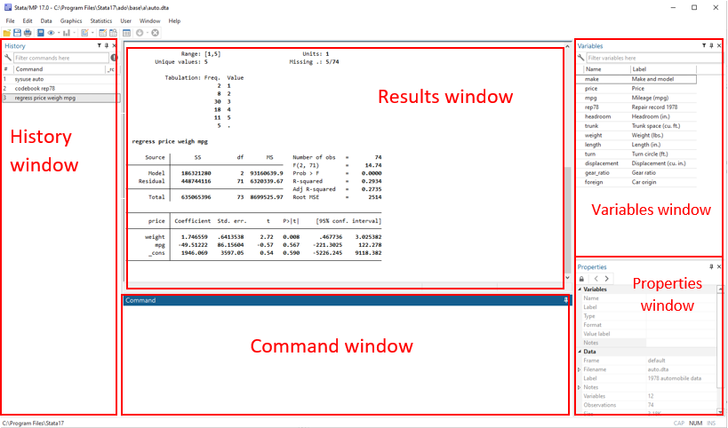
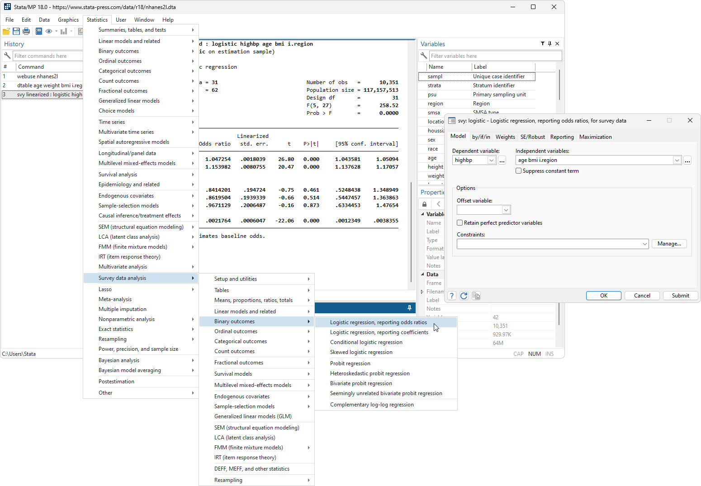
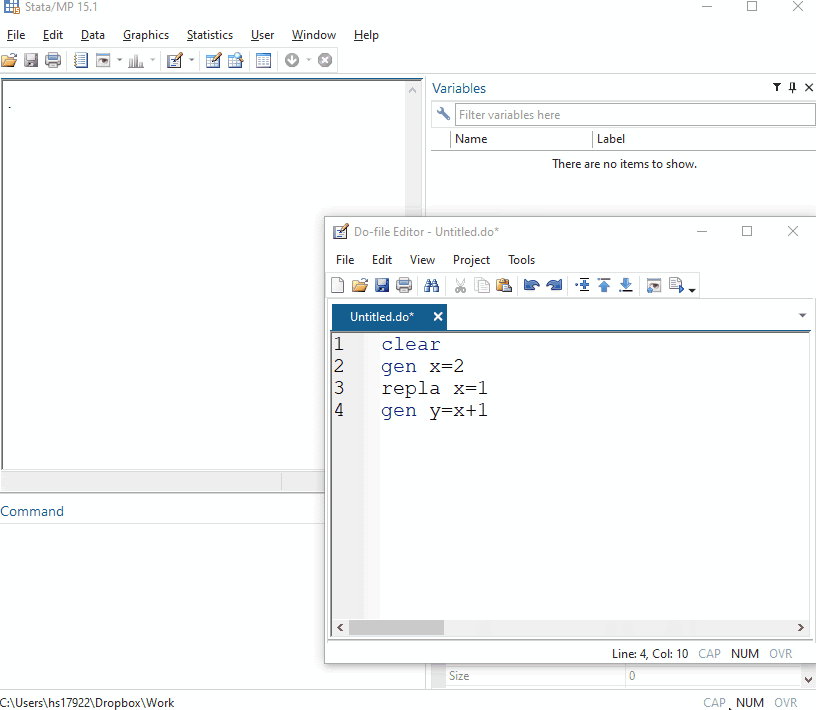
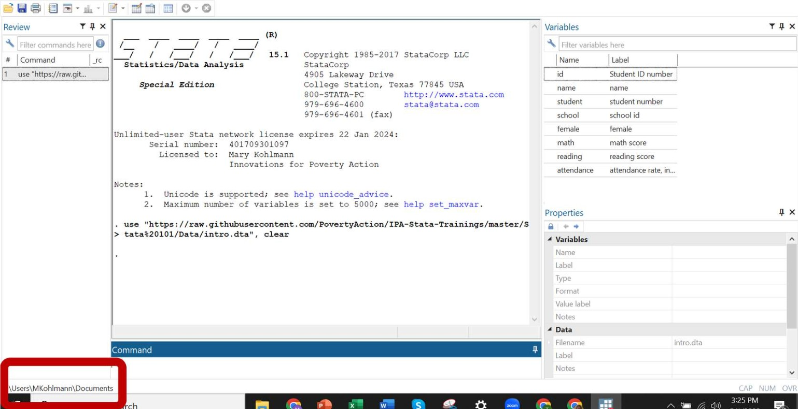
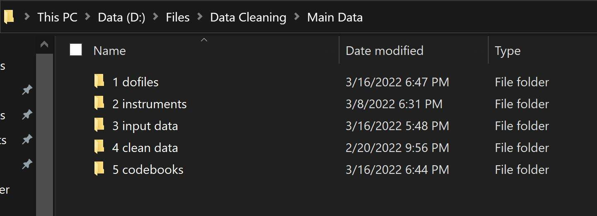

Getting Started with Stata
This page provides a brief introduction to Stata, the statistical software used at IPA for data cleaning, processing, and analysis.

Stata is a general-purpose statistical software package developed by StataCorp and used for data manipulation, visualization, and statistical analysis. It is used by lots of researchers in different fields of study. Although there are other statistical software – including R, SAS, SPSS and Python – Stata is the primary statistical tool used at IPA due to its flexibility and ease of use and also because it is most widely used by social science researchers. Over the years, IPA and J-PAL have developed a lot of training materials and user-written programs for Stata—this course is based on the work of many colleagues across many countries and projects.
Why use Stata?
While spreadsheet software – like Microsoft Excel – is widely available and easy to use, these often lack the flexibility and sophistication required for complex statistical analyses. Stata, on the other hand, is a powerful statistical software package that provides a wide range of tools and capabilities for data analysis and management. Some of Stata’s capabilities as a statistical software include:
- Ability to handle large and complex datasets
- Powerful data management and cleaning tools
- Extensive library of statistical procedures
- An active user community with a wide range of resources
- High-quality graphics and visualization tools
- Compatibility and integration with a wide range of file formats, including Excel, CSV, and SAS
- Extensive documentation and user guides
- Regular updates and improvements to keep up with new methods.
Installing Stata
If Stata requires purchasing or securing a license from StataCorp. At IPA, staff have access to an instutional license. Once you have a licenses, you should install the relevant version for your computer.
Remember that Stata can be installed on any computer owned by IPA. IPA staff can manage this installation directly—you do not need to request support from IPA’s Technology team unless you encounter a problem. Please note that IPA’s Stata license should only be used on IPA devices and should not be installed on your personal computers.
IPA staff can download and install the relevant version (.exe for Windows, .dmg for MacOS, or .tar.gz for Linux) from IPA Box installation documentation.
Also note that Stata is not currently available for mobile devices. If you encounter problems after carefully reviewing all instructions, send an email to the IPA Technology team at support@poverty-action.org.
The Stata Interface
Stata’s interface is designed to provide users with a user-friendly environment that allows them to interact with the software and perform statistical analyses efficiently. That being said, there are several windows and tools (explained below) that you can use to interact with the software and conduct your work.

- Command window: Displays the output of commands executed in the command window. This includes tables, graphs, and other results generated by Stata. In other words, all the results from your analyses appear here.
- Results window: Displays the output of commands executed in the command window. This includes tables, graphs, and other results generated by Stata. In other words, all the results from your analyses appear here.
- History window: This is your command history, and it shows all commands you have typed during your Stata session and all commands Stata created for you when you work with the GUI.
- Variables window: The variables window displays information about the variables in the dataset currently loaded in Stata. Users can view the variable name, label, type, and properties, among other information.
- Properties window: You can use this window to manage your variables, including their names, labels, value labels, notes, formats, and storage types.
Besides the five main windows, Stata offers other specialized tools and features to help with your data-related work. Some of these include the project manager, the data and graph editors, and the do-file. More on these later.
Interacting with Stata
You can use the menus and toolbars contained in Stata’s graphical user interface rather than writing code to perform common tasks, such as opening datasets, running statistical analyses, and creating graphs. We refer to this method as point-and-click. To execute a specific task, you can simply click on the “Run” button in the toolbar.

However, a more typical (and recommended) approach involves typing “commands” into the program to manipulate and analyze large quantities of data; we refer to this as the commandline. This may feel unfamiliar if you don’t have a background in statistical analysis or coding, but most data-oriented professionals use the command-line approach as it eliminates the need to navigate menus and toolbars. It also allows for easier automation and scripting of analyses, which can be helpful for more advanced users.

Stata’s command syntax
Stata syntax is the language we use to communicate with Stata. This means that, as with any other language, we need to learn it, understand it, and use it for effective communication with the software. The standard syntax of Stata commands is as follows:
[by varlist]: command [varlist] [=exp] [if exp] [in range] [weight] [using filename][, options]Where varlist denotes a list of variable names, command denotes a Stata command, exp denotes an algebraic expression, range denotes an observation range, weight denotes a weighting expression, and options denotes a list of command-specific options. In other words, this means that any Stata command we run is accompanied by multiple options in brackets, [], that alter the output we receive from said command. Other than the command itself, everything in brackets is optional.
Another important thing about syntax: Stata commands and syntax never come in CAPITAL LETTERS. Therefore, always use small letters when typing Stata commands.
Setting up a working directory
While working in Stata, you will often need to import or export files into directories – or folders – on your computer. When importing or exporting a file, you need to indicate the location in which the file can be found or saved so that Stata is able to pinpoint the exact file you are looking for or output to the exact folder that you want. In this section, we will explore how Stata handles file directories.
Whenever you open up Stata, Stata sets a default directory. You can see this directory at the bottom left corner of the Stata window.

Stata also provides a convenient command for displaying your current directory. Type the following into your Command window:
pwdYou will notice that Stata has displayed the same directory that is displayed at the bottom left of your Stata window. This directory is your current working directory—whenever you try to import or export in Stata without specifying a directory, Stata will assume that this is the one you mean. You can also list the names of the files and folders of your current working directory by using the following commands:
dir
lsFor most projects, you will want to change your working directory to a folder that contains the files you want to work with. You can change your current working directory using the cd command. Pull up and read the help file for the following command:
cd "target folder"Absolute vs. Relative Paths
When working with Stata, it is important to keep a good file system that allows you to easily find project files and subfolders that you may be looking for. Sometimes you may be working alone and can set all your paths with only your own workspace in mind. However, in most cases you will want to write your Stata code in a way that makes it replicable on other computers without additional setup.
A relative path denotes a file path in relation to the current working directory, while an absolute path denotes a file’s path at a fixed location on a disk. In most cases, you want to use relative paths. Examine the folder shown below. Take notice of the path at the top as well as the subfolders in this folder.

Let’s assume that your current working directory in Stata is D:\Files\Data Cleaning\Main Data, which is the folder in the picture above. You want to navigate within Stata to the 1 dofiles subfolder. You could achieve this using either of the following codes:
* Option 1
cd "D:\Files\Data Cleaning\Main Data/1 dofiles"
* Option 2
cd "1 dofiles"Code option 1 is an example of using an absolute path; it directs Stata to an exact location every single time you run this code. This means that regardless of your current working directory in Stata, you can always switch to this target directory using Code option 1. However, this code may not work on another computer unless the other user has the Main Data folder located in the path D:\Files\Data Cleaning.
Code option 2 directs Stata to the same folder using a relative path. Based on this code, Stata will assume that you want to move to a folder named 1 dofiles which is located in your current working directory. This code will only work if your current working directory contains the folder 1 dofiles.
Loading a dataset
When working in Stata, you will work with datasets from different sources and in different formats. Stata provides a list of commands for importing and exporting various data in various formats including Excel spreadsheets (.xls and .xlsx files), text files, and datasets from other software such as SPSS and SAS. Stata can also create and store data in a Stata-format dataset with the filename extension .dta. The .dta format is the primary format you will use when storing and analyzing data in Stata.
There are several ways to import a dataset into Stata, including:
- The
usecommand - Using File > Open in the menu bar to select a file
- Clicking on the “Open” icon – which looks like a folder – in the Menu bar to select a file.
- Double clicking on the dataset within your computer’s file directory to open a new Stata session with the dataset already loaded
In most applications, we should be using the use command. For example, let’s download a sample dataset into our current working directory using this command:
copy "https://raw.githubusercontent.com/PovertyAction/IPA-Stata-Trainings/master/Stata%20101/Data/intro.dta" "intro.dta", replaceNote that you will not see a change in your Stata display after running this command. If you open the folder that you have designated as the current working directory, you should now see a .dta file (marked with the Stata icon) titled intro.dta.
Next, import this dataset from the current working directory into Stata. To do this, use the use command to import the dataset intro.dta as follows:
use "intro.dta", clear- Because the file is located in your current working directory, you do not need to specify the file path.
- If you already have a different dataset loaded in Stata’s memory, you will need to include the
, clearoption as part of your command.
The use command also works directly with URLs. Let’s re-import the intro dataset straight from the GitHub website by running the following code in Stata:
use "https://raw.githubusercontent.com/PovertyAction/IPA-Stata-Trainings/master/Stata%20101/Data/intro.dta", clearYou will see that Stata has automatically detected and imported the dataset directly from the website without you needing to download it first.